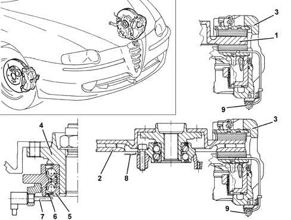

3310A FRONT DISC BRAKES
- Path
- Descriptions > 33 BRAKING SYSTEM > 3310 DISC BRAKES > 3310A FRONT DISC BRAKES
- Kind
- system description
- Applies to
- engines: 1.6 TS, 2.0 TS; all production periods
- Interactive page
- https://sloeber94.github.io/elrnDB-a147/en/#/3022477
Applies to: engines: 1.6 TS, 2.0 TS; all production periods
CONSTRUCTION FEATURES
Two different vehicle configurations have been adopted on the vehicle in view of weight and power differences between different versions:
- The 1.6 T. SPARK - 105 BHP version comes with solid discs and Theves floating aluminium calipers with automatic play take-up
- other versions cme with ventilated discs and Theves floating cast iron calipers with automatic play take-up
A multipolar magnetic ring fitted to the inner hub bearing race indicates wheel movement to the active ABS sensor [3340 A(B.S. ANTI-LOCK BRAKING SYSTEM .)]

1 - 1.6 T. SPARK - 105 BHP brake disc 2 - 1.6 T. SPARK 120 BHP 2.0 T. SPARK Selespeed 3 - Brake caliper 4 - Hub 5 - Hub bearing 6 - Magnetic ring 7 - Active ABS sensor 8 - Guard 9 - Pad wear warning light connection